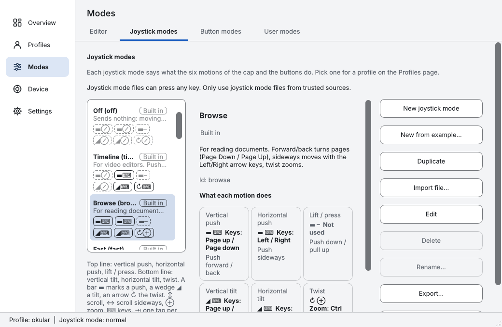
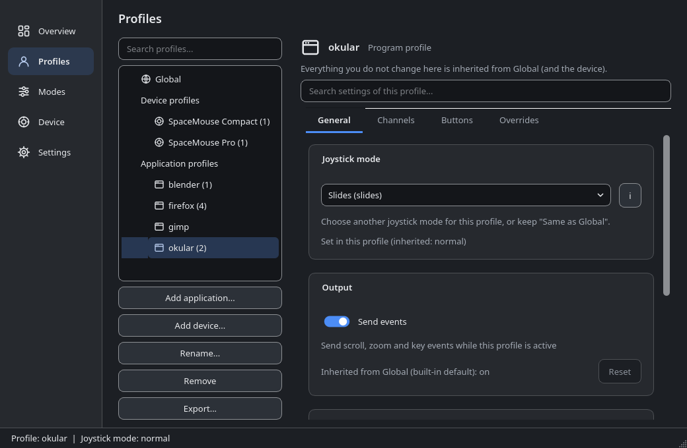
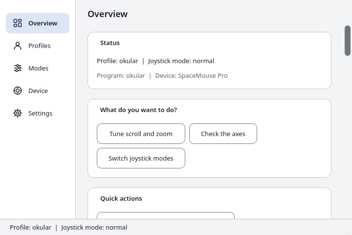
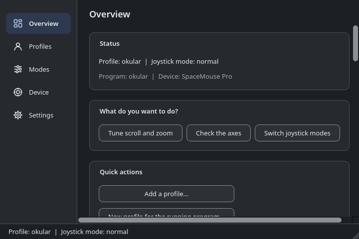

- Free and open source
- Linux · Windows · macOS
Scroll and zoom everywhere with your SpaceMouse
dofscroll makes a 3Dconnexion SpaceMouse work as a scroll wheel in browsers, PDF readers and maps.
Tested on RHEL 9, not yet on Windows or macOS: see status.




How it feels
Browser
Long pages glide by.
PDF
Page through documents.
Map
Twist the cap to zoom.
Your SpaceMouse, beyond 3D
Without: the cap does nothing in your browser. With dofscroll: it scrolls and zooms.
Scroll and zoom everywhere
Browsers, PDFs, documents and maps: push to scroll, twist to zoom.
A profile per program
Smooth scrolling in the browser, timeline scrubbing in the video editor. Also per device.
Buttons that do more
Switch modes, hold or toggle one, or send a combination such as Ctrl+0 to reset zoom.
Ready-made modes
Slides, Media, Map, Browse, Timeline, Precision. Or write your own.
Download
Linux
Fedora, RHEL, Debian, Ubuntu
Download for Linux.rpmor.deb: open it with your package manager.Windows
Windows 10 and 11
Download for Windows
Run the.exesetup. SmartScreen warns first: click More info, then Run anyway.macOS
Apple silicon
Download for macOS
Open the DMG, drag the app to Applications. First start: right-click, then Open.
Tested on RHEL 9 with SpaceMouse Pro and Compact. Windows and macOS builds come from CI and have not been run on a device yet: tell us how it goes.
Check the download
Download SHA256SUMS.txt too and run:
sha256sum -c --ignore-missing SHA256SUMS.txtSupported systems: Requirements.
How it works
Install
Get the package from the download section.
Plug in
Connect your SpaceMouse. On Linux, start
spacenavd.Scroll
Push the cap to scroll, twist it to zoom.
Linux commands
sudo dnf install ./dofscroll-*.rpm # Debian, Ubuntu: sudo apt install ./dofscroll_*.deb
sudo systemctl enable --now spacenavd
systemctl --user enable --now dofscroll.service dofscroll-ui.serviceNothing happens? See Troubleshooting. More: installation guide, Quick start.
Questions
Does it work in Firefox or Chrome?
Yes. dofscroll sends ordinary scroll and zoom events, so browsers, PDF readers and maps work.
Is it tested?
Tested extensively only on RHEL 9 (X11, KDE Plasma, SpaceMouse Pro and Compact). Other Linux distributions were install-tested in CI containers. The Windows and macOS builds are built and unit-tested by CI but have never been run with a real device.
Does it work on Wayland?
There is a uinput backend. It is untested, needs an opt-in udev rule for /dev/uinput, and per-program profiles work only with kdotool on KDE.
Do I need the 3Dconnexion driver?
No. On Linux dofscroll uses the open-source spacenavd. On Windows and macOS it reads the device itself; that is not yet verified on hardware.
Which models work?
Tested: SpaceMouse Pro and Compact. Known but untested: Wireless, Pro Wireless, Enterprise, SpaceNavigator.
Will it disturb Blender or my CAD program?
Programs that read the SpaceMouse themselves would get the input twice. Switch dofscroll off for them with a program profile (ENABLED = 0).
Is it free?
Yes, GPL-3.0-or-later, no ads, no tracking, no cookies. It is an independent project, not affiliated with or endorsed by 3Dconnexion.